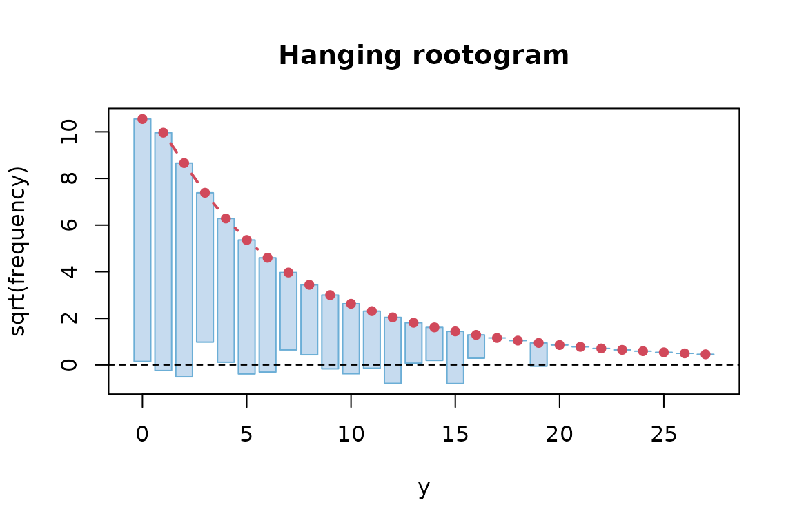

The count families cover the main models of the count data literature: Poisson, NB1, NB2, NB-P, generalized Poisson, Conway Maxwell Poisson, Poisson inverse Gaussian, Poisson lognormal, Sichel, Delaporte, generalized Waring, Faddy’s EPPM, and their zero truncated, zero inflated and hurdle variants.
Overdispersion
n <- 500
d <- data.frame(x = rnorm(n), expo = runif(n, 1, 3))
d$y <- rnbinom(n, mu = d$expo * exp(0.3 + 0.5 * d$x), size = 1.5)
fp <- regcomp(y ~ x + offset(log(expo)), family = "poisson", data = d)
fnb <- regcomp(y ~ x + offset(log(expo)), family = "nb2", data = d)
fnb1 <- regcomp(y ~ x + offset(log(expo)), family = "nb1", data = d)
AIC(fp, fnb, fnb1)
#> df AIC
#> fp 2 2559.582
#> fnb 3 2162.930
#> fnb1 3 2194.417
plot(fnb, which = "rootogram")
Dispersion can depend on covariates:
Excess zeros
d$yz <- ifelse(runif(n) < plogis(-1 + d$x), 0, d$y)
fzi <- regcomp(yz ~ x, zi ~ x, family = inflate("nb2"), data = d)
fhu <- regcomp(yz ~ x, hu ~ x, family = hurdle("nb2"), data = d)
AIC(fzi, fhu)
#> df AIC
#> fzi 5 1689.792
#> fhu 5 1683.325
predict(fzi, data.frame(x = c(-1, 1)), type = "probability", at = 0)
#> probability(0)
#> [1,] 0.4427496
#> [2,] 0.5988429Exact and quantile methods
Exact conditional Poisson inference for small samples:
exact_poisson(y = c(0, 1, 3, 4, 6), x = c(0, 0, 1, 1, 1), exposure = c(10, 12, 9, 11, 10))[c("estimate", "p_value", "conf_int")]
#> $estimate
#> [1] 2.254794
#>
#> $p_value
#> [1] 0.006212928
#>
#> $conf_int
#> [1] 0.3590072 6.0042453Quantile regression for counts by jittering (needs quantreg):
q <- quantile_count(y ~ x, d, tau = 0.75, m = 20)
q$coefficients
#> (Intercept) x
#> 1.358678 0.535788